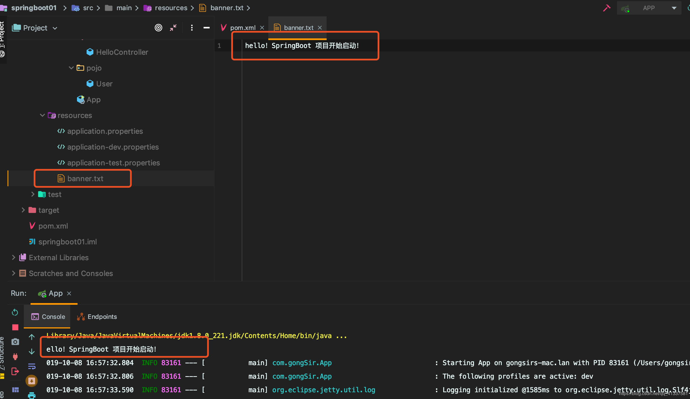

原文连接:https://www.cnblogs.com/gongsir/p/11637350.html
目录
2.1 @SpringBootApplication
从上篇文章中知道@SpringBootApplication是加载启动类上的一个组合注解，源码定义：
@Target({ElementType.TYPE})
@Retention(RetentionPolicy.RUNTIME)
@Documented
@Inherited
@SpringBootConfiguration
@EnableAutoConfiguration
@ComponentScan(
excludeFilters = {@Filter(
type = FilterType.CUSTOM,
classes = {TypeExcludeFilter.class}
), @Filter(
type = FilterType.CUSTOM,
classes = {AutoConfigurationExcludeFilter.class}
)}
)
public @interface SpringBootApplication {
//other code...
}可以看到这个注解包含了@SpringBootConfiguration、@EnableAutoConfiguration、@ComponentScan三个常用的注解，他们的作用如下：
- @SpringBootConfiguration 其实质就是一个@Configuration，表示被注解的类是一个配置类，developer可以在该类中配置Bean
- EnableAutoConfiguration 表示开启自动化配置
@ComponentScan 对包进行扫描（注解
@Service、@Repository、@Component、@Controller、@RestController、@Configuration等），默认扫描的类都位于当前类所在包的以及子包，因此通常将启动类放在项目根包中2.2 SpringBoot配置文件
2.2.1 Properties配置
SpringBoot完成了大量的自动化配置，但是开发过程中，难免需要我们自己定义配置一些信息，比如数据库的配置，因此SpringBoot提供了properties配置，SpringBoot会默认读取application.properties中的配置信息。
SpringBoot项目中的application.properties的存放位置以及优先级关系：- 1、项目根目录的config目录下
- 2、项目根目录下
- 3、classpath:/config目录下
4、classpath下
application.properties的配置信息以键值对（key = value）的形式编写：
server.port=8080
user.name=gongSir
user.major=computer
user.grade=2017
server.error.path=/error
2.2.2 YAML配置
YAML是JSON的超集，是一种专门用来写配置文件的语言，简介而强大，可以用来替代application.properties。YAML简单易上手，用缩进表示层级关系，区分大小写。
现在改写上文的properties，将文件后缀改成yml，即application.yml:
server:
port: 8080
error: /error
user:
name: gongSir
major: computer
grade: 20172.2.3 读取配置文件中的自定义信息
无论是properties还是yaml配置都会被SpringBoot加载到environment中。spring提供了@Value注解以及EnvironmentAware接口将Spring Environment中的数据注入到bean属性上，demo如下：
首先在pom中引入依赖：
<dependency>
<groupId>org.springframework.boot</groupId>
<artifactId>spring-boot-configuration-processor</artifactId>
<optional>true</optional>
</dependency>现在来读取上文的user信息，写一个bean：
@Component
//user是前缀
@ConfigurationProperties(prefix = "user")
public class User {
private String name;
private String major;
private String grade;
public String getName() {
return name;
}
public void setName(String name) {
this.name = name;
}
public String getMajor() {
return major;
}
public void setMajor(String major) {
this.major = major;
}
public String getGrade() {
return grade;
}
public void setGrade(String grade) {
this.grade = grade;
}
@Override
public String toString() {
return "User{" +
"name='" + name + '\'' +
", major='" + major + '\'' +
", grade='" + grade + '\'' +
'}';
}
}添加一个/user接口：
@RestController
public class HelloController {
@GetMapping(path = "/hello")
public String hello(){
return "hello spring boot!";
}
@Autowired
User user;
@GetMapping(path = "/user")
public String user(){
System.out.println(user);
return user.toString();
}
}使用@Autowired注解注入注册的bean信息，然后接口输出信息：
使用@Value注解，修改上述代码：
@RestController
public class HelloController {
@GetMapping(path = "/hello")
public String hello(){
return "hello spring boot!";
}
@Value("${user.name}")
String myName;
@Autowired
User user;
@GetMapping(path = "/user")
public String user(){
System.out.println("myName: "+myName);
System.out.println(user);
return user.toString();
}
}控制台：
2.2.4 profile切换运行环境
在生产开发过程中，项目上线之前，经常需要切换运行环境，即在开发环境、测试环境、预发布、发布环境之前切换，而这些不同的环境往往有不同的配置文件信息，每次都去修改application.properties难免复杂繁琐，SpringBoot提供了很好的解决方案，SpringBoot中约定了不同环境下配置文件的名称规则为application-{profile}.properties（YAML同理），profile表示当前环境的名称，具体配置：
1、创建配置文件
假设现在有test和dev两个环境，我们在resource下分别创建==application-test.properties==、==application-dev.properties==，分别表示测试环境和开发环境的配置，简单配置：
==application-dev.properties==:
server.port=8080==application-test.properties==:
server.port=80812、修改application.properties
接下来我们在==application.properties==中配置环境名称即可：
spring.profiles.active=dev演示test环境启动：
演示dev环境启动：
2.3 服务器配置
2.3.1 Tomcat配置
SpringBoot内置了默认的tomcat服务器，因此不需要特别配置，如需修改tomcat端口等信息，可在上文中的application.properties文件中配置：
#端口号
server.port=8081
#错误页面
server.error.path=/error
#session失效时间
server.servlet.session.timeout=30m
#Tomcat的请求编码
server.tomcat.uri-encoding=utf-8更多配置参考官方文档！
2.3.2 Jetty配置
除了Tomcat，SpringBoot也支持嵌入Jetty，配置如下：
<dependency>
<groupId>org.springframework.boot</groupId>
<artifactId>spring-boot-starter-web</artifactId>
<!-- 取出Tomcat默认项 -->
<exclusions>
<exclusion>
<groupId>org.springframework.boot</groupId>
<artifactId>spring-boot-starter-tomcat</artifactId>
</exclusion>
</exclusions>
</dependency>
<!-- 嵌入Jetty服务器 -->
<dependency>
<groupId>org.springframework.boot</groupId>
<artifactId>spring-boot-starter-jetty</artifactId>
</dependency>因为SpringBoot默认在web中内嵌了Tomcat，因此需要从web中去除tomcat，然后加入Jetty依赖即可。
启动项目：
2.4 修改启动banner
SpringBoot项目启动时会在后台打印一个banner，如下图：
我们也可以自己定制想要的启动页：
在resource目录下新建一个==banner.txt==文件，把想打印的字符保存在这个TXT里面，SpringBoot启动时，就会打印出来：

也可以定制艺术字体，直接去这里定制，然后复制到banner中即可！

小结
本文主要介绍SpringBoot的基础配置，包括启动注解、配置文件、服务器配置等。待续......